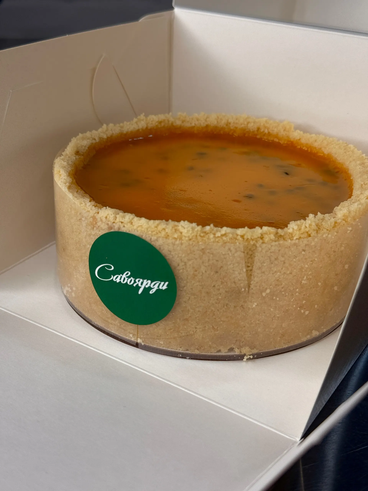
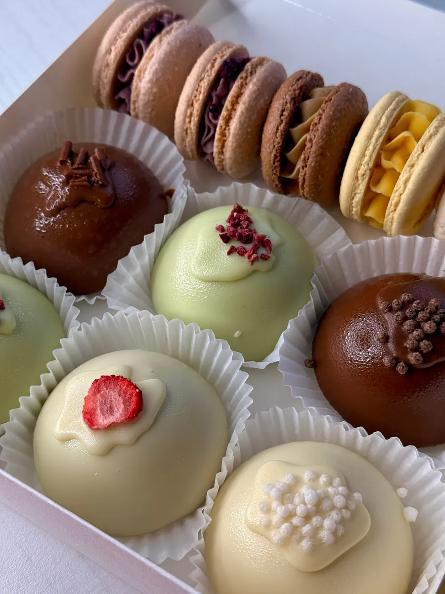
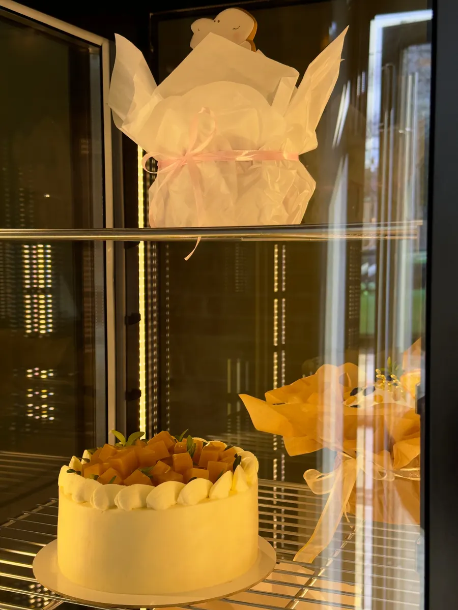
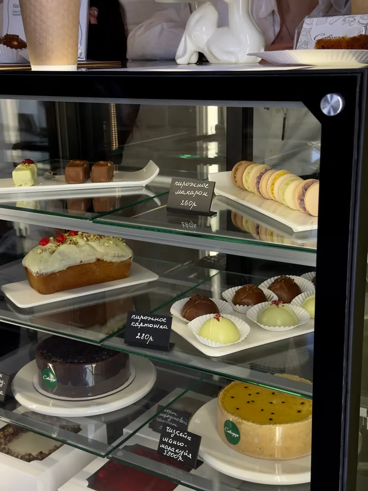

Кондитерская на Крестьянской, 23
Торты и десерты на заказ в Воронеже
Муссовые торты, классика и торты с авторскими начинками, чизкейки и десерты ручной работы. Самовывоз и доставка в любой район.

- 5,0 на Яндекс.Картах, 35 оценок
- Торты по вашему референсу
- Доставка в любой район
Прайс
Цены из прайса кондитерской (апрель 2026). Декор считается отдельно.
Торты
- Муссовый тортшпинат-малина, кофе-амаретто, яблоко-банан2 500 ₽ за штуку
- Советская классика«Наполеон», «Медовик», «Эстерхази», «Муравейник», «Мишка на севере»2 800 ₽ за кг
- «Лёгкая» начинкакрасный бархат с клубникой, фисташковая девочка, лимонный с мятой, карамельная груша и другие3 000 ₽ за кг
- «Сложная» начинкакапучино бейлиз, «Сникерс», «Три шоколада», «Крепкий орешек» и другие3 500 ₽ за кг
- Чизкейк1,8 кг: манго-маракуйя, тирамису, крем-брюле клубника-кокос3 500 ₽ за штуку
- Кекстворожный, шоколадный, миндальный с апельсином, лимонный, фисташковый2 000 ₽ за кг
Десерты
- Пирожныев ассортименте250 ₽ за штуку
- Макаронманго-маракуйя, смородиновый, клубничный мохито, фисташка-малина260 ₽ за штуку
- Картошкафисташка-малина, рафаэлло, вишня, кофе бейлиз280 ₽ за штуку
- Мотикарамельный ферреро, взрывной медовик, груша дорблю300 ₽ за штуку
- Капкейки«Марс», «Ягодный взрыв», «Баунти»350 ₽ за штуку
Как заказать торт
- 01
Повод и дата
Напишите в Telegram или позвоните: скажите, к какому дню нужен торт.
- 02
Начинка и дизайн
Выберите начинку из прайса и пришлите референс.
- 03
Самовывоз или доставка
Заберите торт на Крестьянской, 23 или закажите доставку в любой район, цена зависит от расстояния.



Что пишут клиенты
Точно по референсу
«Дизайн точно как на референсе (рай для перфекциониста): без переделок, узор, цвет», пишет Алиса С.
Свои начинки
Галина Харченко рада, что «можно было выбрать именно те начинки, которые я хотела».
Чизкейк
«Заказывали с женой чизкейк, и это был самый вкусный чизкейк который мы ели!», пишет Всеволод Разуваев.
Качественные ингредиенты
«Инна добавляет только качественные ингредиенты», пишет Денис Б.
Отзывы с Яндекс.Карт
«Нужен был торт на день рождения, и всё получилось просто супер! Дизайн точно как на референсе (рай для перфекциониста): без переделок, узор, цвет 💯 И конечно же очень вкусная начинка (капучино бейлиз). Кстати, только здесь я нашла кофейную начинку из всех кондитерских в врн. Так что если вам надоели стандартные красный бархат или медовик, то обратите внимание на Савоярди, у них много интересных вкусов. Однозначно рекомендую👍🏻»
Алиса С. · 25 мая
«Заказывала торт на день рождения. Торт просто восхитительный! Порадовало, что можно было выбрать именно те начинки, которые я хотела. Качество на высоте, а вкус – просто сказка! Буду рекомендовать всем друзьям и коллегам такую замечательную кондитерскую!»
Галина Харченко · 25 мая
«Заказывали с женой чизкейк, и это был самый вкусный чизкейк который мы ели! Когда забирали заказ, не удержались, и взяли еще по десерту, на витрине их представлено много и благодаря разнообразию каждый найдет что-то для себя. Десерт с вишней и шоколадным суфле идеальный, а жена сказала, что это лучшее пирожное картошка. Остались очень довольны, обязательно вернёмся ещё не один раз. Спасибо большое!»
Всеволод Разуваев · 9 июля
Отзывы с карточки на Яндекс.Картах, без правок.
Контакты
- Адрес
- Крестьянская улица, 23, вход справа, Воронеж
- Часы
- ежедневно, с 11:00 до 21:00
- Телефон
- +7 (920) 434-07-62